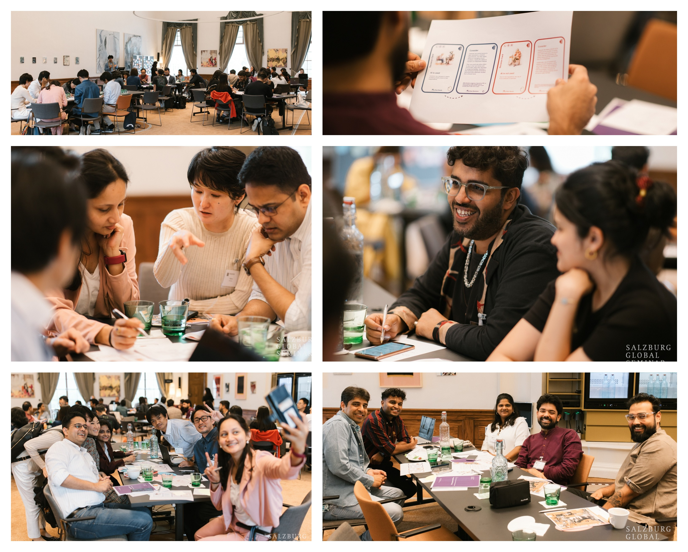

Moral Morpheus: Promoting collective discourse & responsible
innovation through situational & relatable narratives.
-
Satyam Mohla
satyammohla@gmail.com -
Sidharth Mohla
sidmohla@gmail.com
Digital Asia Labs, New Delhi, India
MoralMorpheus aims to promote critical thinking around responsible innovation and train a million leaders by forcing people to consider various factors and choose whether to use technology or not to solve a real world problems.
Abstract
MoralMorpheus is a gamified pedagogy concept designed to improve discourse around ethics of technology through our unique binary mutually-exclusive alternative forced choice framework.
Our toolkit nudges people to choose whether to use a technology or not in response to a certain situation where technology has been used somewhere in the world in the past. However, unlike giving people complex, abstract, unrelatable situations, we develop very simple, real world, relatable situations in which people commonly see technologies like AI solutions being used for determining credit score based on keyboard clicks.
Furthermore, at the heart of MoralMorpheus design process lie the creation of curiosity hooks that resonate with users. These hooks include data points, cultural stories and hooks specific to different countries, and a humanistic face to elicit empathy. People get a chance to consider needs, socioeconomic conditions of situation of a new country, whose beliefs/worldview and resources may differ and thus force the people in the ethical tradeoff of optimizing for beliefs/worldview or resources.
By infusing these nudges with the double diamond design process, we are able to take our users through a journey to exploring an issue more widely or deeply (divergent thinking) and then taking focused action (convergent thinking). By integrating these elements, MoralMorpheus involuntarily forces students to think critically about the dichotomous nature of these technologies and consider impact on vulnerable, thereby facilitating a more relatable and engaging learning experience, crucial for navigating the complexities of responsible innovation and digital ethics.
Expected Outcomes
Moral Morpheus will allow us to
‣ foster dialogue around complexities of using technology to address societal issues, specifically the ongoing techsolutionism using digital technologies such as AI, blockchain, robotics etc.
‣ encourage understanding of diverse perspectives & differing needs regarding the use of technology within different contexts, communities, cultures & countries.
‣ tangibly bring out the collective experiences of diverse backgrounds among the fellows & foster conceptualization of fresh ideas and innovative approaches to existing projects and concepts.
Our tool will not only introduce the joys of AI to users but will also place these technical solutions in the socio-political and economic ambit in which they were created in a friendly and engaging way, allowing users to consider them through various lenses. Furthermore, it will also allow users/ fellows to measurably see how different cultures and geographies behave differently to such technologies, allowing them to develop solutions in future considering the needs of local people.
Innovation Toolkit

We have also integrated MoralMorpheus as part of an innovation toolkit which can used to teach system thinking & design thinking for social impact. The kit can be played in small, diverse groups of 4-8 participants to leverage the variety of experiences, expertise, and governance contexts each member brings.
Science Communication
We are very active in popular science spaces & have spoken at Fakugesi Digital Innovation Festival 2023 & recently at OIST Inclusive Communication Symposium 2024.